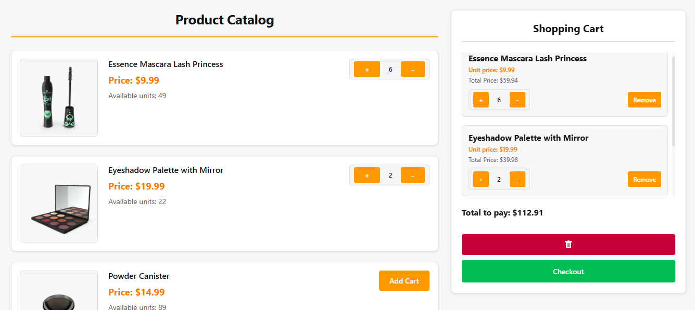
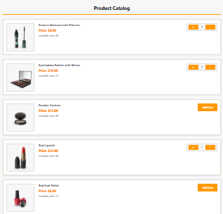
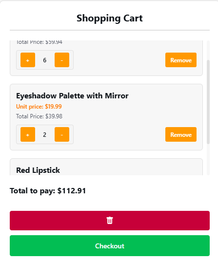

Resumen del Proyecto
Este proyecto consiste en el desarrollo de una aplicación web que simula el funcionamiento de un marketplace de productos utilizando únicamente JavaScript Vanilla. El objetivo fue construir una experiencia de compra completa sin utilizar frameworks, enfocándose en la manipulación directa del DOM, la lógica de negocio del carrito de compras y la persistencia de datos en el navegador mediante LocalStorage.
Arquitectura del Sistema
La aplicación fue desarrollada con un enfoque modular utilizando JavaScript puro para separar responsabilidades entre la lógica de negocio, el renderizado de la interfaz y la gestión del estado del carrito.
- Manipulación del DOM: generación dinámica de productos y actualización de la interfaz.
- Lógica de Carrito: agregado, eliminación y cálculo automático del total.
- Persistencia: almacenamiento del carrito utilizando LocalStorage.
- Estructura Modular: separación entre catálogo, carrito y lógica de eventos.

Catálogo dinámico de productos
Funcionalidades Implementadas
Catálogo Dinámico de Productos
Los productos se generan dinámicamente desde una estructura de datos en JavaScript. Cada elemento del catálogo incluye nombre, precio, imagen y botón de compra, lo que permite escalar fácilmente la cantidad de productos disponibles.

Carrito de Compras Interactivo
Implementación de un sistema de carrito que permite agregar productos, eliminar elementos y visualizar el total de la compra en tiempo real. Toda la lógica fue desarrollada con JavaScript Vanilla manejando eventos y actualizando el DOM dinámicamente.

Persistencia con LocalStorage
Para mejorar la experiencia de usuario, el estado del carrito se guarda en LocalStorage. Esto permite que los productos agregados permanezcan disponibles incluso si el usuario recarga la página o vuelve más tarde.
Aprendizajes del Proyecto
Este proyecto permitió profundizar en el funcionamiento interno del navegador y comprender cómo los frameworks modernos abstraen la manipulación del DOM. La implementación del carrito, el manejo de eventos y la persistencia en LocalStorage ayudaron a consolidar conceptos fundamentales de JavaScript como estructuras de datos, funciones, manejo del estado y arquitectura de aplicaciones frontend.